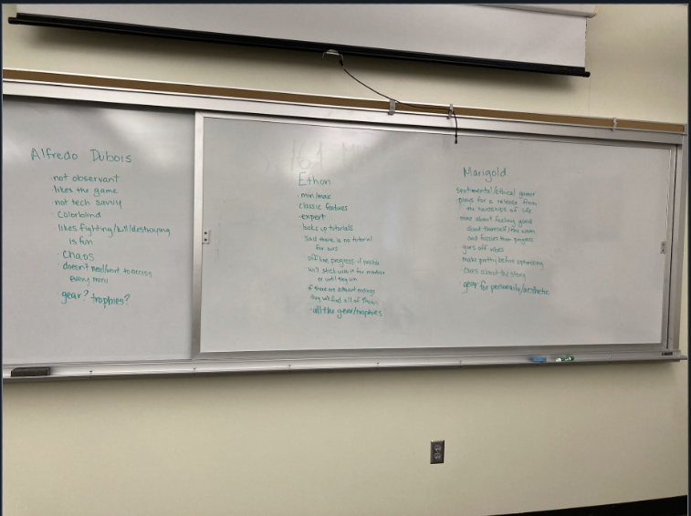
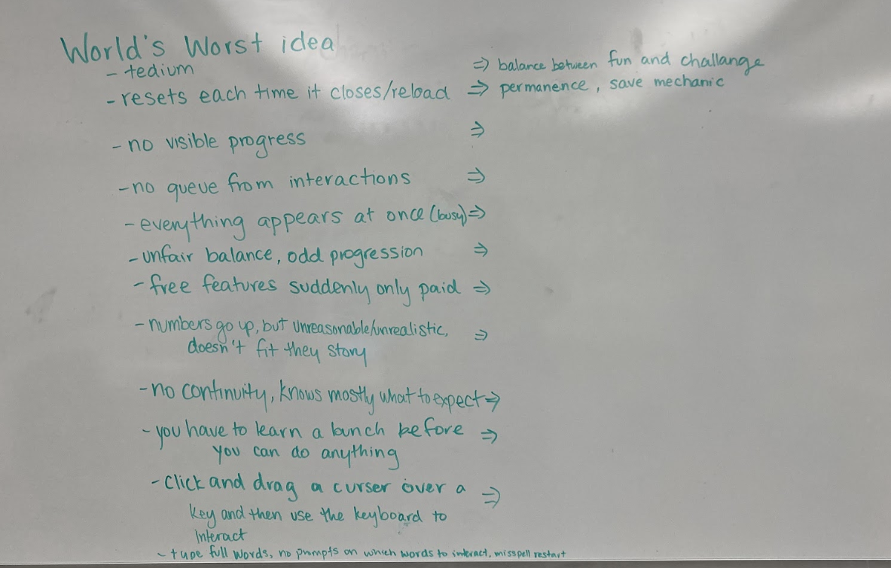
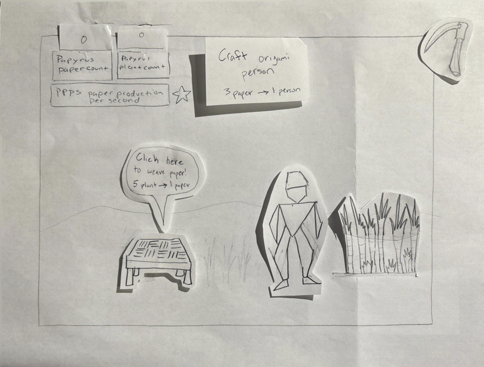
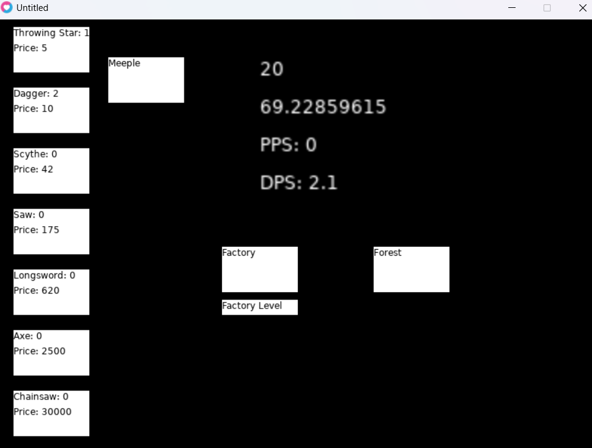
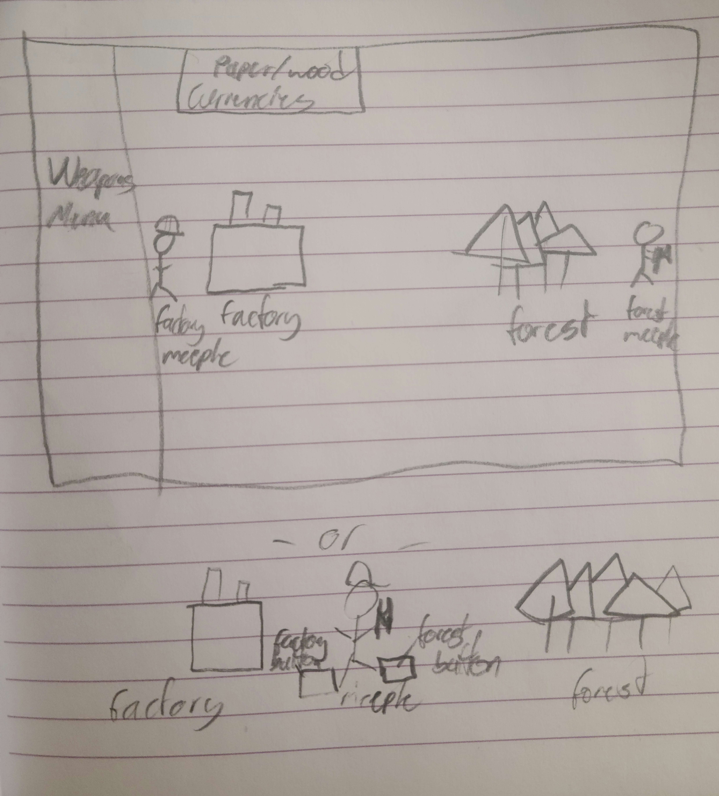

Design
Needfinding
I interviewed 2 subjects to get an understanding of what was lacking within the current idle game scene and what they would like to see in a new idle game. They came up with: relegating idle portion to offline, having multiple mechanics and ways to progress that make being online worth it, and the numbers have to fit within the theme of the game.

Ideation
We interviewed both idle game enthusiasts and gamers that did not enjoy idle games to better understand what this genre is most lacking. We then created three personas to guide our creative process for the breadth of players that we’d want to enjoy our game. For Merigold, we created a story that could keep them attached to the cozyness of our game and progress for the sake of learning more about the Entity. Ethon is the easiest to appeal for as the idle genre was made for min/maxing, for him we have clear optimization strategies that allow you to complete the game faster while still providing a challenge. Finally for Alfredo Dubois, we wanted to make this game an easy introduction to the idle genre by introducing mechanics in an obvious way while still allowing for exploration, including accounting for the fact that the least optimized path is still good enough to eventually complete the game. In addition, we also used the world’s worst technique to identify mechanics/features that might be overlooked but that we needed to create a successful idle game. This is where our idea for a save state originated.


Prototyping
We designed a paper prototype to help us understand how the layout of our UI would affect the user's intuition of the build up of the game and allow for a smooth flow while still introducing novelty. We designed the prototype to have the main resource buttons on the far right of the screen, the next button in the middle right, the counters for these button located on top to evoke priority and then the tools to make production go faster on the far left of the screen. We wondered if the atypical eye pattern of right to left would be add to the novelty or if it would hinder the initial experience. Once we made our prototype it seemed that our hypothesis of eye patterns was correct. Our testers saw the resource labels first and immediately sought out a way to collect, which led them from the right side of the screen to the left, then during the duration of collecting, their eyes were directed across the screen.

Evaluation
I had a peer play through a demo of our game that did not have any cueing graphics or labels. I was hoping to understand how intuitive the layout of our design was. We found that with no prompting the play tester was able to discover the initial buttons that make the numbers go up then after several tries of the other buttons, and subsequently going back to the original buttons, they were able to buy the first few items. It was at this point they had a full conceptualization of the game mechanics. From this study, we decided to go ahead with a progressive button introduction system to help manage the learning curve, as well as of course adding labels to the currencies.

User Interface Design
My UI design with the layout of the main buttons makes sure all of the information needed to play the game is immediately visibility. It constrains the user by introducing buttons with new mechanics one at a time so that there is never a time where a button is presented to the screen that has no worth in being explored that moment. And finally the UI design presents consistency by making all of the buttons that center around resource collection appear in the middle of the screen, and the buttons that increase that production are to the left, we were also consistent in that all of the clickable buttons are highlighted when moused over while the non-clickable "buttons" share the information of what resources they track when moused over. We had considered having the forest and factory related items on opposite sides of the screen but that would have messed with the consistency in that some of the things you could buy would increase the production of resources from both and yet it would be on opposite sides of the screen. We also considered making the weapons buttons a part of a drop down menu, but this would have messed with the visibility as the weapons are frequently used to help progress the player further so they should always be visible.
